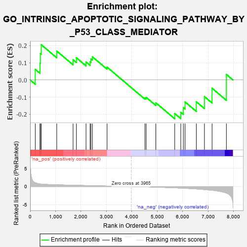
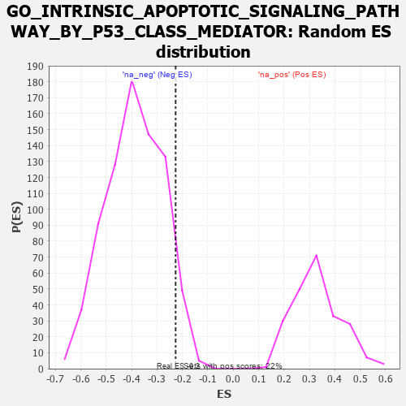

| | | Dataset | 7d |
| Phenotype | NoPhenotypeAvailable |
| Upregulated in class | na_neg |
| GeneSet | GO_INTRINSIC_APOPTOTIC_SIGNALING_PATHWAY_BY_P53_CLASS_MEDIATOR |
| Enrichment Score (ES) | -0.22680181 |
| Normalized Enrichment Score (NES) | -0.58415484 |
| Nominal p-value | 0.93951094 |
| FDR q-value | 1.0 |
| FWER p-Value | 1.0 |
Table: GSEA Results Summary

Fig 1: Enrichment plot: GO_INTRINSIC_APOPTOTIC_SIGNALING_PATHWAY_BY_P53_CLASS_MEDIATOR
Profile of the Running ES Score & Positions of GeneSet Members on the Rank Ordered List
| PROBE | GENE SYMBOL | GENE_TITLE | RANK IN GENE LIST | RANK METRIC SCORE | RUNNING ES | CORE ENRICHMENT | | 1 | BCL3 | | | 202 | 1.047 | 0.0618 | Yes |
| 2 | BAX | | | 387 | 0.711 | 0.0978 | Yes |
| 3 | RRP8 | | | 403 | 0.699 | 0.1541 | Yes |
| 4 | RRN3 | | | 438 | 0.667 | 0.2054 | Yes |
| 5 | TAF9 | | | 1046 | 0.475 | 0.1686 | No |
| 6 | WWOX | | | 1688 | 0.359 | 0.1178 | No |
| 7 | MSH2 | | | 1819 | 0.334 | 0.1293 | No |
| 8 | ATAD5 | | | 2197 | 0.277 | 0.1049 | No |
| 9 | MIF | | | 2357 | 0.252 | 0.1059 | No |
| 10 | HIPK2 | | | 2389 | 0.247 | 0.1226 | No |
| 11 | KDM1A | | | 2447 | 0.237 | 0.1351 | No |
| 12 | BRCA2 | | | 3024 | 0.146 | 0.0748 | No |
| 13 | SNW1 | | | 4514 | -0.096 | -0.1045 | No |
| 14 | BAG6 | | | 4563 | -0.108 | -0.1015 | No |
| 15 | EP300 | | | 4941 | -0.186 | -0.1335 | No |
| 16 | CDIP1 | | | 5684 | -0.370 | -0.1960 | No |
| 17 | STK11 | | | 5922 | -0.443 | -0.1889 | No |
| 18 | JMY | | | 6023 | -0.479 | -0.1616 | No |
| 19 | UBB | | | 6090 | -0.503 | -0.1281 | No |
| 20 | DYRK2 | | | 6533 | -0.677 | -0.1273 | No |
| 21 | AEN | | | 6852 | -0.842 | -0.0971 | No |
| 22 | DDX5 | | | 7152 | -1.037 | -0.0484 | No |
| 23 | BOK | | | 7715 | -1.817 | 0.0322 | No |
Table: GSEA details [plain text format]

Fig 2: GO_INTRINSIC_APOPTOTIC_SIGNALING_PATHWAY_BY_P53_CLASS_MEDIATOR: Random ES distribution
Gene set null distribution of ES for GO_INTRINSIC_APOPTOTIC_SIGNALING_PATHWAY_BY_P53_CLASS_MEDIATOR